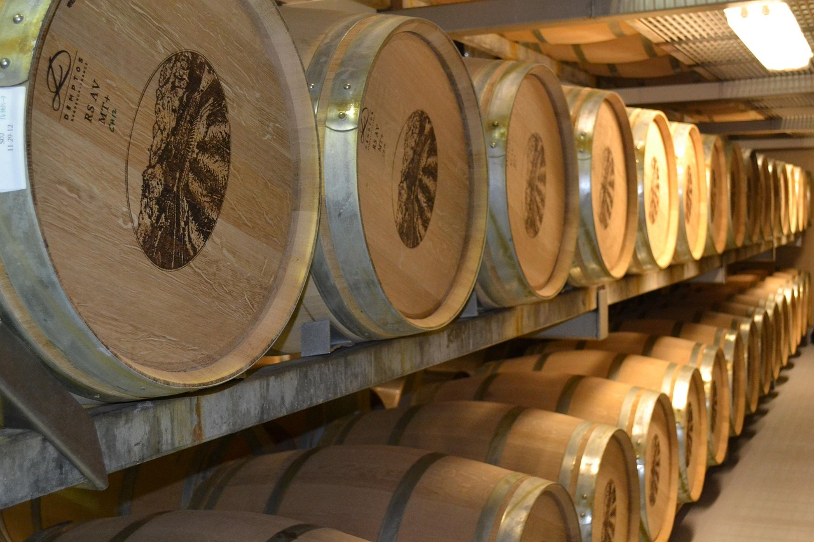

Beliggenhed
JORDBRUG
Jorden vi dyrker - hjertet i vores vin
Hos Havblink Hvidvin er jorden ikke bare baggrunden for vores vin – den er kilden til alt, vi skaber.
Vores marker ligger i det sydfynske, hvor det milde klima, de mange solskinstimer og nærheden til havet skaber ideelle forhold for druedyrkning. Her modnes druerne langsomt og udvikler en særlig friskhed, fylde og mineralitet.
Den varierede jordbund, fra sandet ler til kalkholdige lag, giver vores hvidvine kompleksitet og karakter. Vi dyrker vores vinmarker økologisk og med stor respekt for jordens naturlige balance, fordi vi tror på, at sund jord giver levende vine – vine, der smager af det sted, de kommer fra.
Hver flaske Havblink Hvidvin er et udtryk for netop dette sted: sydfynsk natur, havets nærhed og menneskelig omhu i perfekt samspil.

LAGRING
Tidens rolle i vinens dybde
Hos Havblink Hvidvin betragter vi lagring som vinens modning og fordybelse – et stille kapitel, hvor smagene samles, afrundes og får lov at finde hinanden.
Når vores vine er færdiggæret, får de lov at hvile under kontrollerede forhold, hvor tid og ro er lige så vigtige som temperatur og teknik.
Vi lagrer vores hvidvine på både ståltanke og udvalgte fade, afhængigt af druens karakter og den ønskede stil.
Ståltanken bevarer friskhed og klarhed, mens egetræet kan tilføre diskrete nuancer af fylde, varme og kompleksitet. Fælles for alle vores lagringsmetoder er, at de bruges med nænsomhed – vinens egen stemme skal altid stå tydeligst.
Tålmodighed er nøglen.
Vi smager løbende, følger udviklingen tæt og flasker først, når vinen selv er klar. Resultatet er hvidvine med balance, dybde og harmoni – hvor lagringen ikke skjuler, men fremhæver det, som naturen og håndværket har skabt.
